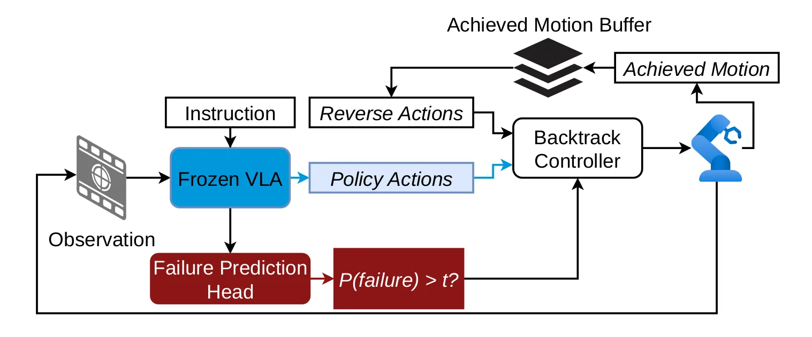
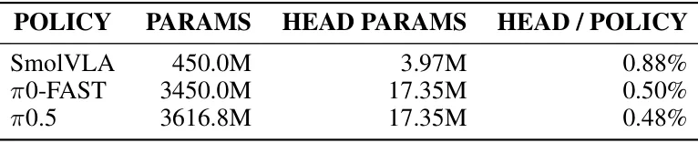
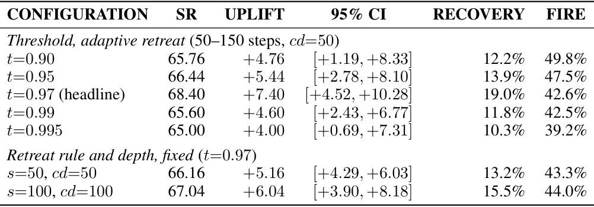

A Fragilidade dos Modelos VLA Fora da Distribuição
Os modelos Vision-Language-Action (VLA) representam um avanço significativo na manipulação robótica, combinando representações visuais e linguísticas de modelos pré-treinados para gerar ações. No entanto, sua robustez permanece um problema crítico. Mesmo VLAs treinados em datasets diversos e multi-embodiment tornam-se frágeis quando enfrentam estados fora da distribuição de treinamento (OOD). Mudanças modestas na câmera, na inicialização do robô ou na composição da cena podem reduzir drasticamente as taxas de sucesso.
Este problema é especialmente agudo em VLAs compactos, como o SmolVLA. Embora seu backbone de visão e linguagem se beneficie de pré-treinamento amplo, seu treinamento robótico é limitado a menos de 30.000 episódios, coletados principalmente de um único embodiment. Dados de imitação robótica são construídos majoritariamente a partir de demonstrações bem-sucedidas, contendo pouquíssimos exemplos de como recuperar quando algo dá errado.
Quando um VLA comete um erro — soltar um objeto, derrubar algo ou assumir uma configuração desconhecida — ele frequentemente coloca o sistema em um estado não representado em seus dados de treino. Permitir mais tempo de execução geralmente não resolve a falha; no benchmark LIBERO-Long, dobrar o orçamento de passos aumenta o sucesso em apenas 2,3–3,7 pontos percentuais. Soluções tradicionais exigem coleta cara de dados de recuperação ou retreinamento da política, custos que podem precisar ser pagos para cada nova tarefa ou embodiment.
A Ideia Central: Reverter o Erro, Não o Mundo
Os autores propõem uma estratégia de recuperação diferente: em vez de tentar corrigir o ambiente (o que seria outro problema de manipulação complexo), eles focam em reverter a configuração do braço robótico. A hipótese é que, após um erro, o braço pode estar em uma configuração familiar ou próxima de uma configuração onde a política original funcionaria melhor.
Apresentam o Backtrack, um mecanismo leve de detecção e recuperação para VLAs congelados. Ele não requer dados de recuperação, nem retreinamento do modelo principal, nem um modelo separado de inferência. Em vez disso, utiliza uma pequena cabeça de previsão de falha que lê as representações internas já computadas pela política congelada.
Quando a probabilidade prevista de falha excede um limiar, um controlador pausa a política, reverte os movimentos recentes do braço armazenados em um buffer e devolve o controle à política inalterada. Isso permite que o robô tente novamente a partir de uma configuração anterior, potencialmente mais segura. O método explora a intuição de que retrazer o movimento pode desfazer parte do desvio que levou à falha, retornando o robô a um estado melhor representado nos dados de treinamento.

Mecanismo: Cabeçote de Previsão e Controle de Reversão
O núcleo do Backtrack é o Failure Prediction Head (FPH). Este é um módulo leve acoplado à política congelada, composto por uma camada de pooling multi-head attention (MAP) sobre os tokens de features da política, seguida por uma rede feed-forward de três camadas que produz uma probabilidade escalar de falha. Crucialmente, o FPH consome ativações que a política já calcula durante a geração normal de ações, eliminando a necessidade de um forward pass adicional pelo backbone.
Os autores avaliam três pontos de extração de features (feature taps): as embeddings do prefixo que o VLM recebe como entrada (pre), a representação de saída do VLM para esse prefixo (post), e o post concatenado com os estados ocultos do expert de ação (post expert). Para o modelo autoregressivo π0-FAST, que não tem um expert de ação separado, o post é a representação do prefixo após o prefill, antes da geração do primeiro token de ação.
O custo computacional é mínimo. O FPH é avaliado uma vez por chunk de ação e reutiliza ativações existentes. O overhead de parâmetros depende da largura das features, não do tamanho total da política. Ele adiciona no máximo 0,88% dos parâmetros do SmolVLA (450M) e apenas 0,48% do π0.5 (3,6B). Isso torna a solução escalável e viável para implantação em sistemas com restrições de memória.

Treinamento com Rollouts e Balanceamento de Dados
O treinamento do FPH requer apenas supervisão binária simples: saber se um rollout autônomo da política congelada terminou em sucesso ou falha. Os autores coletam rollouts em todos os quatro suites do benchmark LIBERO. Um desafio crítico é o desbalanceamento de dados: as falhas não são distribuídas uniformemente. Por exemplo, para o π0-FAST, 56% dos frames de falha vêm do LIBERO-Long, enquanto apenas 7% vêm do LIBERO-Object.
Se o treinamento seguisse a distribuição natural, o FPH se especializaria apenas nas suites onde a política falha mais, perdendo generalidade. Para mitigar isso, os autores amostram com peso igual sobre as células (suite, label), garantindo que o FPH aprenda a detectar falhas em todos os contextos. Cada FPH é treinado por 20.000 passos com Adam, batch size 32 e learning rate de 10^-4, sem ponderação adicional de classe positiva além do amostrador balanceado.
Para o SmolVLA, foram usados 20.000 episódios de rollout, com 3.464 falhas identificadas. O π0-FAST teve 7.953 episódios e 812 falhas, enquanto o π0.5 teve 14.000 episódios e apenas 676 falhas. Em todos os casos, 100.000 frames amostrados foram utilizados para treinar e validar o cabeçote, garantindo uma base de dados robusta apesar da rarefação das falhas em alguns modelos.
Estratégia de Reversão: Fixa e Adaptativa
O gatilho para a recuperação ocorre quando a probabilidade prevista de falha excede um limiar específico (t). Nesse momento, a política é pausada e o controlador Backtrack inicia a reversão. Ele replaya os movimentos do braço alcançados anteriormente em ordem inversa, recalculando a probabilidade de falha no mesmo intervalo em que chunks de ação seriam gerados.
Os autores testam duas variantes de reversão. Na variante fixa, o controlador recua por um número predeterminado de passos. Na variante adaptativa, a reversão continua até que a probabilidade de falha caia abaixo de um segundo limiar mais baixo, sujeito a comprimentos mínimos e máximos de recuo. A intuição é que a reversão adaptativa pode ser mais eficiente, parando assim que o robô atinge um estado considerado seguro pelo FPH.
Durante a execução normal, os movimentos alcançados são adicionados a um buffer. Os movimentos executados durante a fase de backtracking não são adicionados ao buffer, evitando loops de reversão infinitos ou dependências incorretas. O estado resultante é observado pela VLA inalterada, e o loop de controle continua normalmente, com a política tentando gerar ações a partir da nova configuração.
Resultados: Onde a Recuperação Paga
A avaliação principal ocorre no LIBERO, com foco especial no LIBERO-Long, uma suite de tarefas de longo horizonte onde todas as três políticas falham com mais frequência. Os resultados mostram que o Backtrack reduz significativamente as taxas de falha: 19,0% para o SmolVLA, 30,3% para o π0.5 e 48,2% para o π0-FAST. Em todos os casos, os intervalos de confiança de 95% excluem zero, indicando robustez estatística.
A melhoria agregada sobre todas as quatro suites do LIBERO é de 20,3%, 26,2% e 19,6% respectivamente. É importante notar que a ordem de melhoria não é preservada entre a suite de longo horizonte e o benchmark geral: o π0-FAST tem a maior redução no LIBERO-Long, mas a menor redução geral. Isso sugere que a eficácia da recuperação depende fortemente das características da suite de avaliação.
Em suites mais curtas, onde a taxa de sucesso de controle já é alta (84,6% a 99,2%), o efeito do Backtrack é menor ou até negativo em alguns casos. Por exemplo, no LIBERO-Object, o π0-FAST teve uma ligeira redução de 0,20% no sucesso. Isso ilustra uma trade-off fundamental: a intervenção pode perturbar episódios que estariam sendo bem-sucedidos. A identidade simples ΔS = cF - bS (onde c é a fração de falhas recuperadas e b é a fração de sucessos perturbados) mostra que a melhoria líquida só é positiva se b/c < F/S. Em tarefas onde o sucesso é alto (F/S grande), tolera-se menos perturbação.
Detecção de Falhas e Generalização
A precisão da detecção de falhas pelo FPH é alta. Em 10.000 episódios com Backtrack ativado, apenas 29 falhas ocorreram sem que o gatilho tivesse sido acionado, resultando em taxas de sucesso condicionais à não-trigger de 99,71% para SmolVLA, 99,99% para π0.5 e 99,94% para π0-FAST. Isso indica que o FPH é eficaz em identificar a maioria dos cenários de falha antes que eles se concretizem.
Além disso, a avaliação offline do FPH no π0.5, usando rollouts mantidos em separado, mostrou uma AUROC de 0,977 ao nível de episódio, separando com alta precisão episódios que falhariam daqueles que teriam sucesso. Isso valida a capacidade do cabeçote de aprender padrões gerais de falha, não apenas ruído específico de execução.
O Backtrack também foi testado no MetaWorld, outro benchmark popular. Todas as doze configurações de controlador testadas com o SmolVLA melhoraram a política não assistida. Isso sugere que a abordagem é generalizável além do LIBERO e eficaz mesmo em ambientes com dinâmicas diferentes.

Limitações e Considerações Finais
Apesar dos resultados promissores, o paper reconhece limitações. O Backtrack é eficaz principalmente em tarefas onde a política base falha frequentemente. Em tarefas fáceis, o risco de perturbar sucessos pode superar o benefício da recuperação de falhas. Além disso, a estratégia de reversão assume que o erro está na configuração do braço e não no ambiente. Se um objeto foi movido para uma posição irreversível por outro agente ou evento externo, voltar o braço pode não resolver o problema.
Outra limitação implícita é a dependência da qualidade do FPH. Se o cabeçote tiver alta taxa de falsos positivos, ele pode interromper execuções bem-sucedidas desnecessariamente. Se tiver falsos negativos, perde-se a oportunidade de recuperação. O balanceamento cuidadoso dos dados de treinamento é essencial para mitigar esses riscos.
Em conclusão, o Backtrack demonstra que uma fração significativa das falhas em VLAs pode ser recuperada com um mecanismo simples de retorno e tentativa, sem a necessidade de coletar dados de recuperação ou modificar a política subjacente. O custo é baixo, a implementação é modular e o ganho é mensurável, especialmente em cenários de longo horizonte onde a robustez é mais crítica.
Implicações para o Desenvolvimento de Robótica
Este trabalho oferece um caminho prático para melhorar a confiabilidade de VLAs em produção. Ao evitar a coleta massiva de dados de falha e o retreinamento contínuo, o Backtrack permite que modelos pré-treinados sejam implantados com maior confiança. Isso reduz a barreira de entrada para o uso de VLAs em ambientes reais, onde a coleta de dados é cara e lenta.
A modularidade do FPH permite que ele seja acoplado a diferentes arquiteturas de VLA, como as baseadas em flow-matching (SmolVLA, π0.5) e as autoregressivas (π0-FAST). Essa flexibilidade sugere que a ideia pode ser estendida a outras famílias de modelos de ação, desde que se tenha acesso às representações internas do backbone.
Para pesquisadores e engenheiros, o Backtrack serve como um exemplo de como alavancar informações latentes nos modelos para melhorar a segurança e a robustez, sem aumentar drasticamente a complexidade computacional. A próxima etapa natural envolve investigar se a reversão pode ser combinada com pequenas correções de ação, em vez de apenas a reversão pura, para lidar com erros mais sutis.
O que fica
- Backtrack usa um pequeno cabeçote de previsão de falha treinado apenas em rollouts do modelo congelado, sem precisar de demonstrações de recuperação.
- Ao detectar risco alto de falha, o sistema reverte o movimento do braço robótico para um estado anterior, permitindo que a política original tente novamente.
- Reduz a taxa de falhas em até 48% em tarefas de longo horizonte no benchmark LIBERO-Long, com custo computacional mínimo.
- Funciona em diferentes famílias de geração de ações (flow-matching e autoregressivo), mostrando robustez arquitetônica.
Paper original: If at First You Don't Succeed, Backtrack: Lightweight Recovery for Frozen VLAs
Comentários
Nenhum comentário ainda. Seja o primeiro.